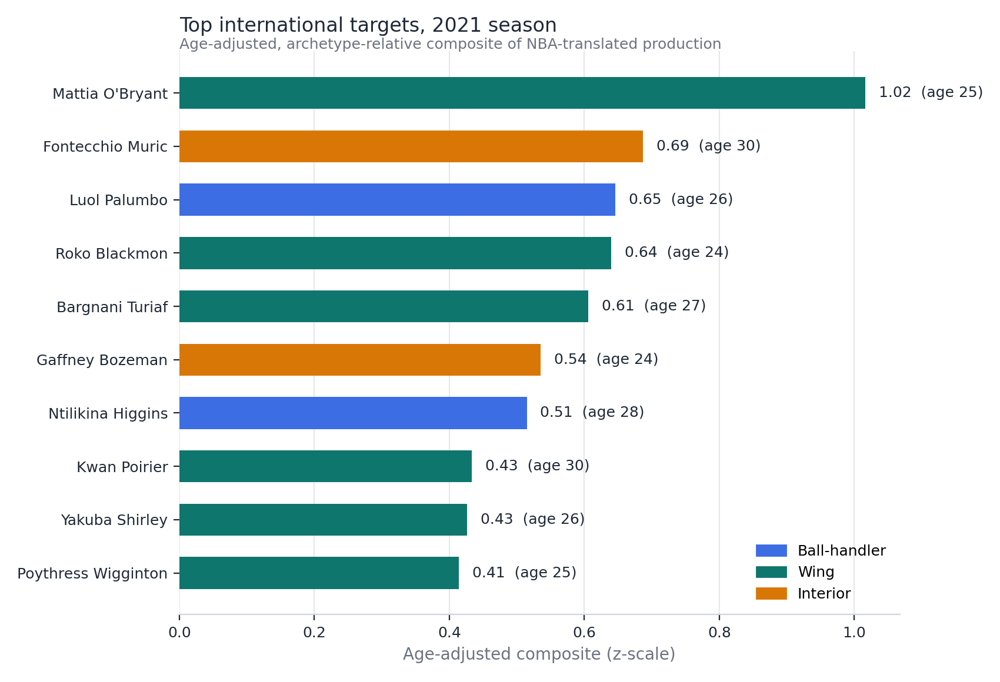
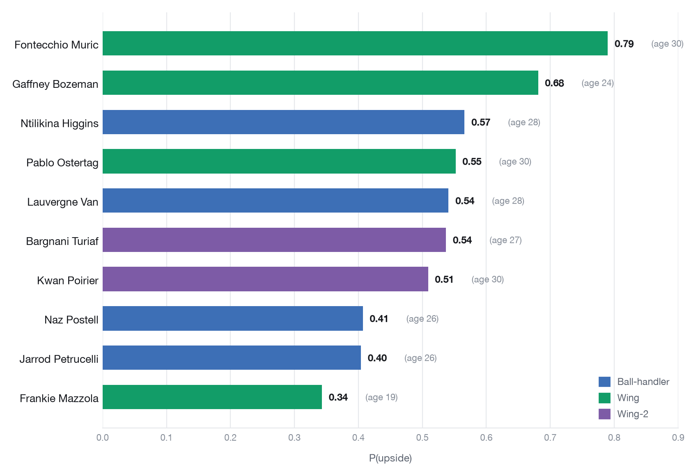

International Scouting Board
A translation pipeline from European leagues to the NBA, built twice: a v2 board of validated per-stat translations, then a v3 hierarchical Bayesian re-evaluation that overturned half of v2's top targets.
What does a EuroLeague stat line really mean in NBA terms?
Learned from the 118 players who actually made the jump: scoring and usage translate strongly with age priced in, rebounds and assists carry over nearly one for one, and three-point volume fails validation in both versions. The v3 re-evaluation adds the harder lesson: a board is only as good as its test, and under a stricter one, five of v2's top ten targets did not survive.
Version 2 learned per-stat INTL to NBA translations empirically and validated each against a naive baseline with leave-one-out prediction error. Version 3 rebuilt the pipeline around a joint hierarchical Bayesian translation model with a hand-rolled Gibbs sampler, hardened the ingestion (103 to 118 training transitions, 392 to 431 ranked players), let the data choose the archetypes, and replaced the point ranking with an upside probability computed from posterior draws. Both versions end in a written scouting report; v3 also reports, openly, what it changed about v2's conclusions.
International signings commit roster spots and money on the basis of production in leagues with different pace, spacing, and competition levels. Intuition about translation is largely untested, and the analytical question is precise: which parts of a European stat line carry over, by how much, and with what uncertainty? The v2 to v3 arc adds a second question every front office should ask of its own models: when the method improves, which recommendations flip?
v2: three vendors' JSON feeds are reconciled into per-40, true-shooting, and usage features across NBA and four European league histories. Careers collapse into minutes-weighted league runs, yielding qualifying INTL to NBA transitions. For each stat, two translation forms (stat only, stat plus age) compete on leave-one-out error against the naive assumption that stats carry over unchanged; winners' correlations become reliability weights, players cluster into three archetypes, and the board ranks an age-adjusted composite.
v3: ingestion is hardened first, because sample size is the scarcest resource: normalized name keys and same-season league ordering recover 15 additional transitions, and aggregating split seasons recovers 39 pool players. One joint hierarchical Bayesian model replaces ten separate fits: translation slopes partially pool across stats, age enters every stat with a shared prior, and a latent per-player factor captures cross-stat translation quality, all fit with a hand-rolled, all-conjugate Gibbs sampler. A Gaussian mixture chooses k=4 archetypes by BIC with soft memberships, and targets are sorted by the probability that a player's translated composite clears the pool's top-decile bar, computed from 1,000 posterior draws per player. Both pipelines are single deterministic scripts with fixed seeds.
v3 was validated with seeded 10-fold cross-validation on folds shared by all three competitors: the hierarchical Bayesian model, v2-style per-stat OLS, and the naive carry-over baseline. The result is a rare, useful honesty: the Bayesian model ties OLS on point accuracy (CV error within 1.5% on every stat). Its value is the coherent posterior, which yields per-player uncertainty and the upside-probability ranking, and that ranking, plus stricter playing-time legitimacy accounting, is what reshuffled the board.
| v2 rank | Player | v2 composite | v3 outcome |
|---|---|---|---|
| 1 | Mattia O'Bryant | 1.02 | Removed: fails v3's playing-time legitimacy test |
| 2 | Fontecchio Muric | 0.69 | v3 #1 · P(upside) 0.79 |
| 3 | Luol Palumbo | 0.65 | Removed: fails v3's playing-time legitimacy test |
| 4 | Roko Blackmon | 0.64 | v3 #12 · P(upside) 0.24 |
| 5 | Bargnani Turiaf | 0.61 | v3 #6 · P(upside) 0.54 |
| 6 | Gaffney Bozeman | 0.54 | v3 #2 · P(upside) 0.68 |
| 7 | Ntilikina Higgins | 0.52 | v3 #3 · P(upside) 0.57 |
| 8 | Kwan Poirier | 0.43 | v3 #7 · P(upside) 0.51 |
| 9 | Yakuba Shirley | 0.43 | v3 #40 · P(upside) 0.02 |
| 10 | Poythress Wigginton | 0.41 | v3 #14 · P(upside) 0.22 |
Computed from both branches' board CSVs using each version's own target filters (playing-time standout, age 30 and under, no prior NBA experience). Target lists: 43 players in v2, 50 in v3; Spearman rank correlation 0.56 across the 38 shared players. Player names are randomized in the source dataset.
| Stat | v2 error reduction | v3 error reduction | Verdict |
|---|---|---|---|
| Usage | 46% | 50% | translates strongly |
| Scoring (pts/40) | 35% | 36% | translates strongly |
| True shooting | 23% | 25% | translates |
| Steals | 27% | 24% | translates |
| Turnovers | 17% | 19% | translates |
| Assists | 9% | 12% | mostly carries over (r 0.86) |
| Rebounds | 2% | 2% | carries over about 1-for-1 |
| Blocks | 2% | 2% | carries over about 1-for-1 |
| 3PM/40 | -6% | -8% | fails the baseline in both versions |
Percentages are the reduction in mean absolute prediction error versus assuming stats carry over unchanged. On the same folds, the v3 Bayesian model and per-stat OLS differ by less than 1.5% on every stat; the CV table reports the tie rather than hiding it.
- The re-evaluation overturned the board. v2's #1 (composite 1.02) and #3 targets fail v3's stricter playing-time legitimacy accounting entirely, and v2's #9 collapses to rank 40 with P(upside) 0.02. A 19-year-old enters the v3 top ten on upside probability that a point ranking missed.
- Validation held or improved on a larger sample. With 15% more training transitions, usage error fell 50% versus naive and scoring 36%; three-point volume still fails its baseline and stays flagged.
- Sampler quality is checked, not assumed. Split-half slope drift across 1,000 kept posterior draws is 0.009, and every ingestion exclusion is printed as a logged decision.
- Known limitations are stated in the README. Including one inherited inconsistency, kept deliberately: 3PM/40 fails the MAE gate yet keeps composite weight 0.16 because weights come from CV correlation. It is documented, with the fix described, rather than silently patched after delivery.


Technical deep dive
Technical highlights
- One joint model instead of ten fits: translation slopes partially pool across stats, per-stat age effects share a prior, and a latent per-player factor captures "translates better or worse than his stats say," fit with an all-conjugate Gibbs sampler written from scratch, no MCMC library.
- Fold-identical three-way CV: hierarchical Bayes, per-stat OLS, and the naive baseline are scored on the same seeded folds, so the comparison is apples to apples by construction.
- Data-chosen archetypes: BIC selects k=4 over v2's assumed k=3; memberships are soft, so combo profiles are graded against a blended peer group, a membership-entropy column flags straddlers, and a mixture-density pass flags "unicorns" that fit no archetype.
- Hardened ingestion as a modeling contribution: normalized name keys (accents, hyphens, suffixes) and same-season league ordering grew the training sample 15%; ambiguous duplicate names get no birth date rather than a guessed one.
Architecture
Key engineering decisions
- Why a hierarchical model when OLS ties it on accuracy?
- Because the deliverable is a ranking under uncertainty, not a point forecast. Partial pooling produces a coherent joint posterior, which is what makes per-player uncertainty and P(upside) computable at all. The CV table states the point-accuracy tie plainly.
- Why a hand-rolled Gibbs sampler?
- The model was designed to be all-conjugate, so exact conditional draws are available without an MCMC library, the sampler is fully inspectable, and convergence is checked directly (split-half slope drift 0.009).
- Why an upside probability instead of a point rank?
- Recruitment lists exist to find upside. P(composite clears the pool's top-decile bar) ranks players by the chance they are worth a roster spot, which is the actual decision, and it is what elevated a 19-year-old the v2 point ranking buried.
- Why keep a known inconsistency in the shipped board?
- The 3PM weight disagreement between the MAE gate and correlation weighting existed in the delivered v2 board. v3 documents it and describes the fix rather than silently changing a delivered artifact, because reproducibility of what was actually shipped matters.
Challenges
- Survivorship, stated in both versions: the transition sample only contains players who reached the NBA, so projections are ranking context, not expectations.
- Honest clustering: the mixture's fourth component is a residual group of low-event profiles, and the README says so rather than naming it a position.
- Uncertainty that varies where it should: the raw points band is nearly constant across the pool, so per-player uncertainty is read from the composite's posterior spread instead; making observation noise heteroskedastic in minutes is the named fix.
Future improvements
Gate composite weights on the baseline test, which moves weight toward blocks and assists; make observation noise heteroskedastic in minutes; and model the selection process itself, who receives NBA offers, to address survivorship directly.
Technology stack
Built on an NBA team's public data-science dataset, anonymized and randomized by the team (Apache 2.0). Because names and bios are randomized, the boards demonstrate process on realistic data rather than live recruiting advice. The v2 vs v3 comparison above was computed from the two branches' generated board CSVs.